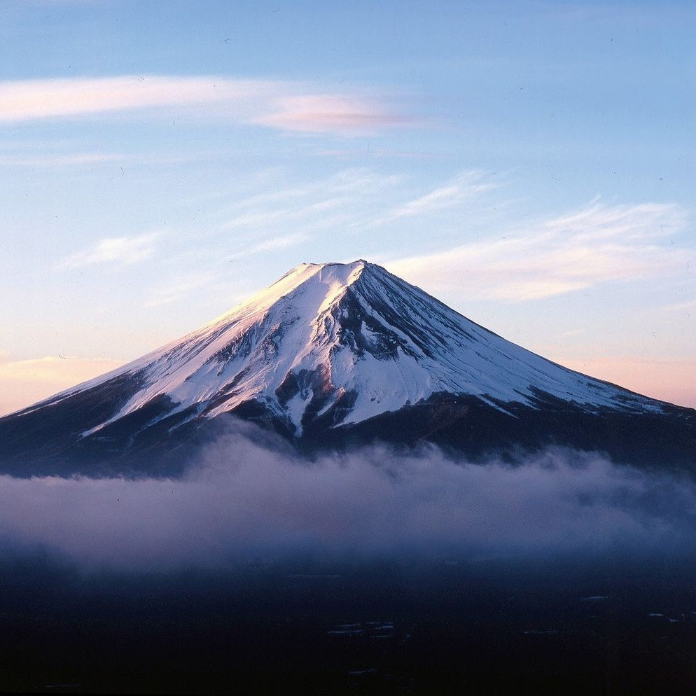
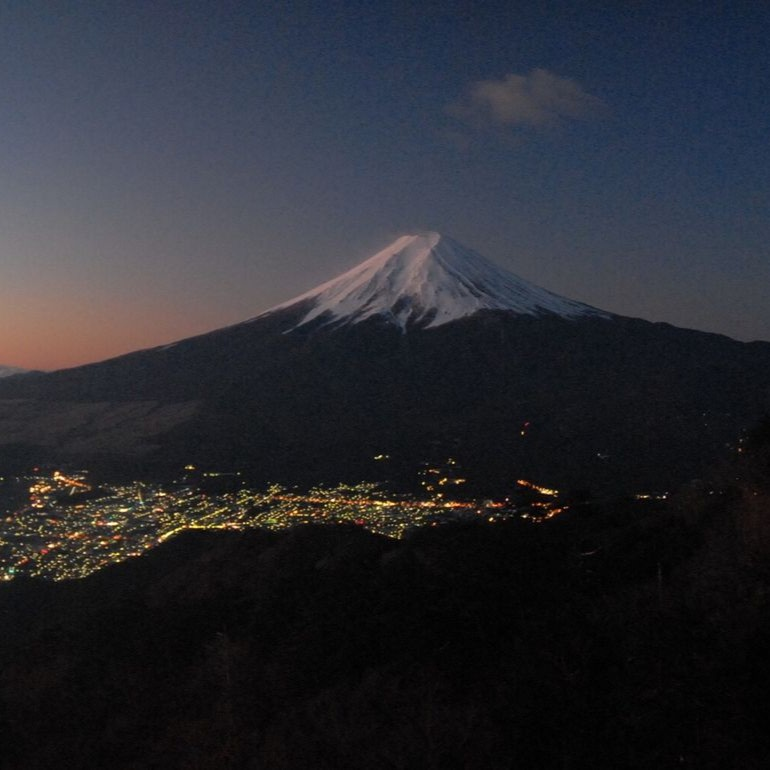

Mount Fuji



Mount Fuji – Japan’s Iconic Natural Wonder
Discover the beauty of Mount Fuji, Japan’s highest peak and one of its most famous landmarks. Each year, visitors from around the world come to enjoy its breathtaking scenery, peaceful lakes, and scenic hiking trails. Whether you’re seeking an adventurous climb, a quiet moment of reflection, or unforgettable photos, Mount Fuji offers a perfect blend of nature, culture, and inspiration all in one destination.